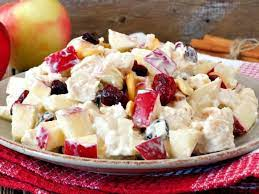
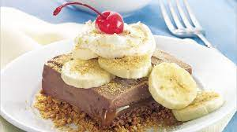
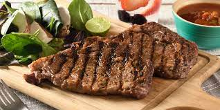
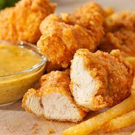

Lista del super para recetas
mi lista es super corta pero la hice con gran esfuerzo
video de mi campeona
Frutas
Postre de manzana

Delicioso postre de Manzana
Postre de Banano

Delicioso postre de banano
Postre de fresa
Postre de Fresa estilo moffin
Carnes
Carne asada

Pollo apanado

Delicioso pollo asado